单周期微架构的实现(RISC-V指令集)
本篇文章主要用于记录在学习Digital Design and Computer Architecture(RISC-V Edition)一书中对单周期微架构过程的理解。
下面的讨论主要围绕以下的RISC-V汇编代码的实现展开。
0x1000 L7: lw x6, -4(x9)
0x1004 sw x6, 8(x9)
0x1008 or x4, x5, x6
0x100C beq x4, x4, L7
x9寄存器中的值为0x2004，x5寄存器中的值为6，内存地址0x2000处的值为10。则，
- 汇编代码第一行：将内存地址为
0x2004-4=0x2000处的值(即10)复制到寄存器x6中 - 汇编代码第二行：将寄存器
x6中的值复制到内存地址0x2004+8=0x200C处 - 汇编代码第三行：对
x5与x6寄存器中的值按位进行或操作，并将结果写入x4寄存器中 - 汇编代码第四行：比较
x4寄存器中的值是否等于x4寄存器中的值，等于则跳转到L7指令地址。很明显，上述条件始终满足，因此该段程序持续运行
指令的底层实现
对于指令的实现过程，第一个阶段即从指令存储器(Instruction Memory)中提取出指令。该过程能使用如下的电路结构实现：
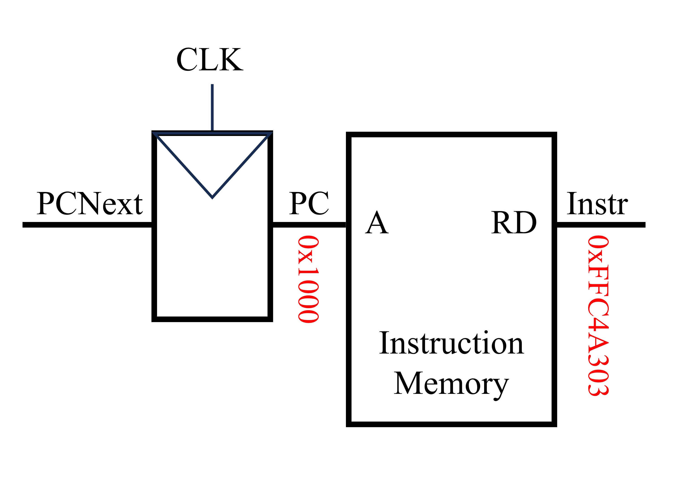
该电路左侧输入的为下一条指令的地址(PCNext)，当时钟上升沿时，下一条指令的地址通过触发器成为PC(注：PCNext与PC均为32位二进制数)。指令存储器的输入为所需执行指令的地址(在这里为PC)，指令存储器的输出为PC处的指令内容(Instr)。对于第一条指令lw x6, -4(x9)，PC为0x1000，Instr为0xFFC4A303。该条指令由汇编代码转换为机器代码的过程如下图所示。
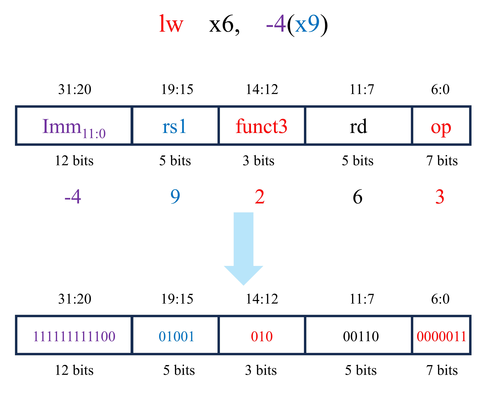
当提取完成指令后(即获得了Instr后)，下一步就是执行相关的指令内容。对于第一条指令(lw x6, -4(x9))，下一步是读取源寄存器x9中的内容。由于lw为RISC-V中的I型指令，因此根据RISC-V指令集编码规则可知，lw x6, -4(x9)指令对应的机器代码的19至15位为对应源寄存器的编号。将得到的寄存器编号传入寄存器文件(Register File)，即可以获得该寄存器的内容。与上述过程同时发生的是获取地址的偏移量，由于此指令中的立即数为12位的有符号数，因此需要将其采用符号拓展的方式拓展至32位。该步骤可使用拓展单元(Extend)实现。符号拓展后的结果为ImmExt(即0xFFFFFFFC)。
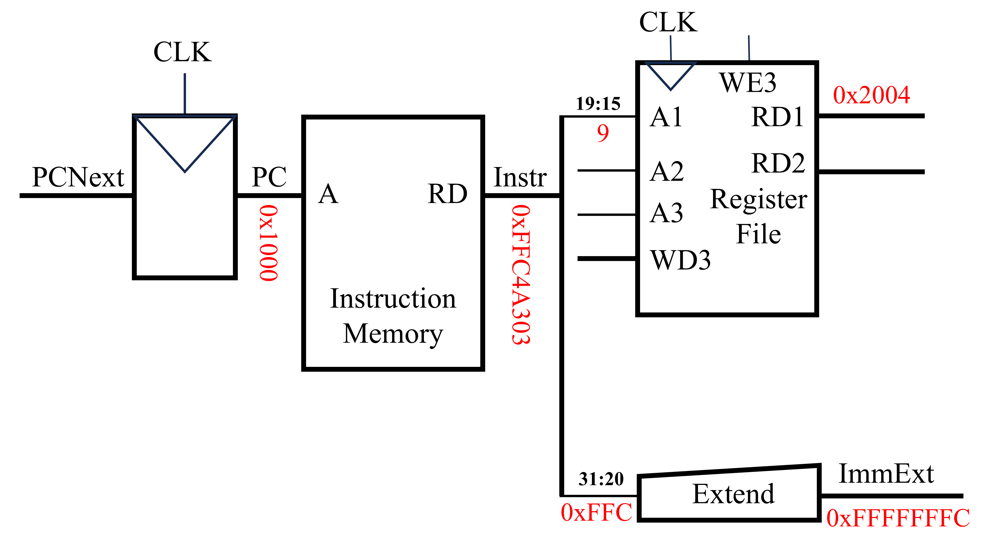
完成上述的步骤后，下一步即计算经过偏移后的内存地址。该过程可使用算术逻辑单元(ALU)实现，如下图所示。ALU的输入为两个操作数(SrcA与SrcB)，其中SrcA为直接从寄存器中读取的内存地址，而SrcB为经过符号拓展得到的地址偏移量。此外，ALU还需一个ALUControl信号输入，该信号控制ALU执行何种操作。在这里，ALUControl与ALU操作之间的关系如下：
ALUControl=000,Function=AddALUControl=001,Function=SubtractALUControl=010,Function=ANDALUControl=011,Function=ORALUControl=101,Function=SLT
实现上述过程的电路结构图如下所示。
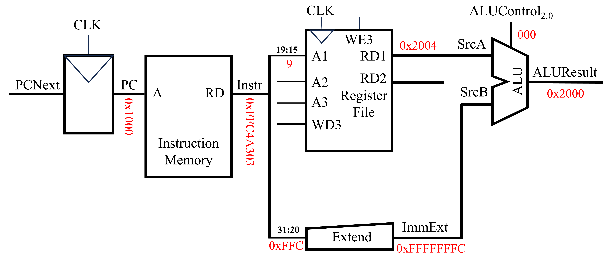
当采用ALU得到最终的内存地址后，下一步则是将该内存地址上的值写回至特定的寄存器中，如下图所示。
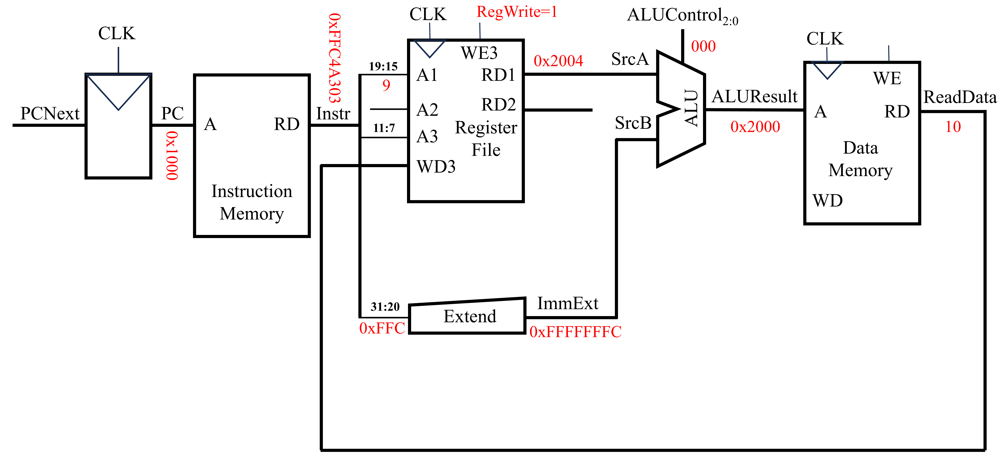
上图数据存储器(Data Memory)中，A端口用于地址输入，RD用于读输出，WD用于写输入。当WE为1时，才能够写入数据。数据存储器读出的数据为ReadData(即10)。该数据通过寄存器文件的WD3端口写入，A3端口为需要写入的内容对应着的寄存器序号和WE3控制能否写入。
当第一条指令快要完成的同时，计算机需要计算下一条指令的地址，以便执行后续的指令。由于RISC-V(准确来说是RISC-V指令集中的RV32I指令集)中一条指令占4字节，因此在顺序结构中下一条指令的地址(PCNext)即为当前指令地址(PC)加上4，即PCNext=PC+4。该过程可使用一个加法器来完成，如下图所示。
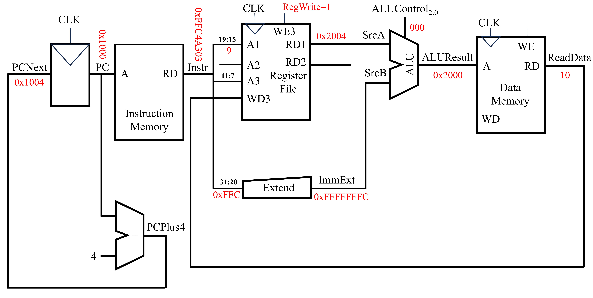
至此，上述汇编代码的第一行实现完成。下面讨论汇编代码第二行的实现。该条指令由汇编代码转换为机器代码的过程如下图所示。
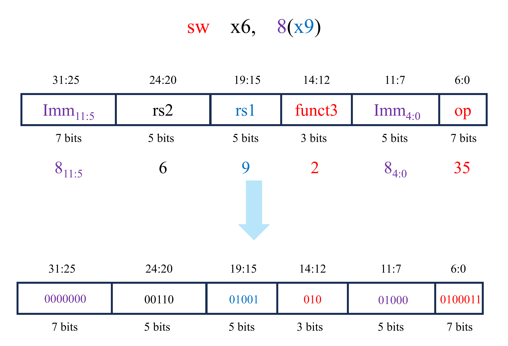
相应的电路实现如下图所示(灰线为完成本指令用不到的电路)
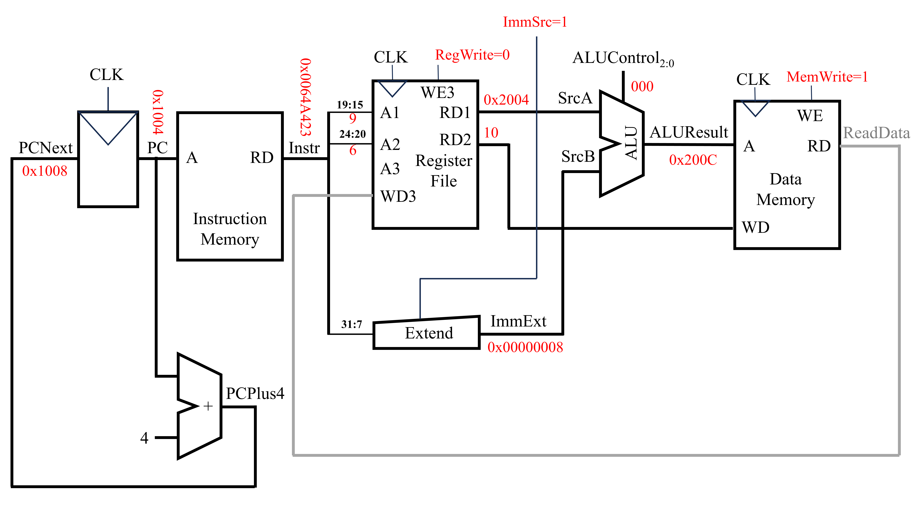
在该条指令的实现过程中，PC为0x1004，PCNext为0x1008，得到的机器语言Instr为0x0064A423。在该机器语言中，19至15位所代表的寄存器中存放着未偏移的内存地址，31至25位和11至7位为地址的偏移量。对于未偏移的内存地址，可使用寄存器文件在A1端读入寄存器的编号，RD1端输出该寄存器中的值。而对于地址的偏移量，可使用Extend单元对其进行提取。Extend上的ImmSrc端口控制着如何提取机器语言中的立即数部分。其中，
ImmSrc=0，对应lw操作，立即数为Instr中的31至20位，并进行符号拓展ImmSrc=1，对应sw操作，立即数为Instr中的31至25位与11至7位
因此，此时ImmSrc=1。获得未偏移的地址和地址偏移量后即可以采用ALU计算得到最终的内存地址ALUResult。紧接着，将该内存地址中的值修改为x6寄存器中的值。x6寄存器中的值可在寄存器文件中提取。寄存器文件A2端口输入要读取的寄存器序号(即该条指令对应的机器语言的24至20位)，RD2端口即可输出该寄存器的值。将该值与数据存储器(Data Memory)写入端口相连，即可实现对内存地址为ALUResult上的值的修改。此时，数据存储器的WE为1。
对于第三条汇编代码(or x4, x5, x6)，其对应的机器代码如下图所示。
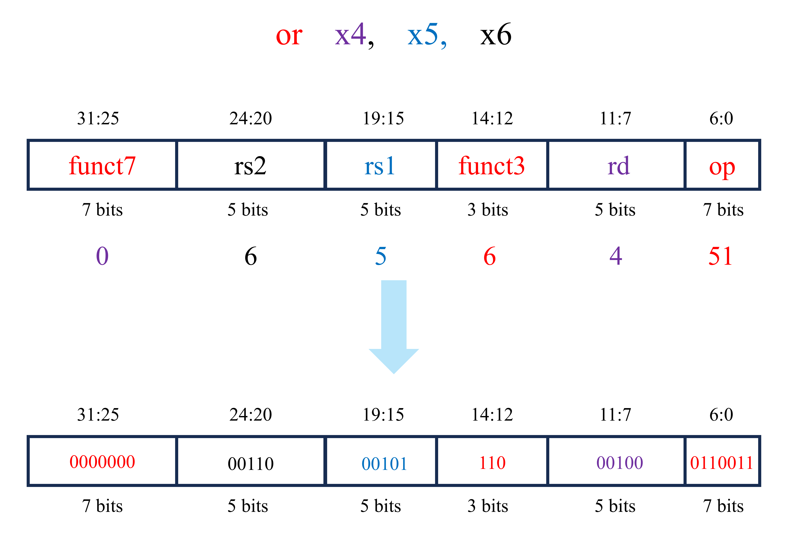
实现上述指令的电路实现如下图所示(灰线为完成本指令用不到的电路)
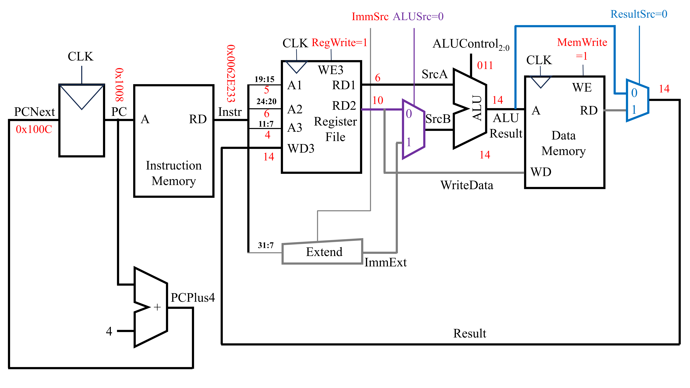
此时PC为0x1008，PCNext为0x100C，从指令存储器中获取得到的指令(即Instr)为0x0062E233。首先需要取出两个源寄存器中的值。该步可用2套寄存器文件读取端口实现。在上述电路中，端口A1输入第一个源寄存器(rs1)的序号(即Instr中的第19至15位)，端口RD1输出第一个源寄存器中的值。端口A2输入第二个源寄存器(rs2)的序号(即Instr中的第24至20位)，端口RD2输出第二个源寄存器中的值。随后将这两个寄存器中获得的值输入ALU中进行运算。由于ALU输入的两个值不一定全部都是来自寄存器，还有可能来自于指令中的立即数。因此，在寄存器文件与ALU之间添加一个复用器。该复用器的信号ALUSrc确定传入ALU的第二个操作数是来自寄存器还是立即数。对于lw/sw等指令，ALUSrc为1，立即数作为SrcB传入ALU。对于R型指令，ALUSrc为0，寄存器读出的数据作为SrcB传入ALU。在此指令下，寄存器读出的数据作为SrcB传入ALU，故ALUSrc为0。经过ALU计算后得到的ALUResult即为最终的结果。对于该条指令，还需将该结果返回至特定的寄存器中。在这之中，返回的寄存器序号为Instr中的11至7位。而返回寄存器的值为ALUResult。由于该指令与数据存储器无关，因此在前面电路的基础上，可在数据存储器后添加一个复用器，该复用器用来选择传回寄存器的值是直接来源于ALUResult还是从数据存储器中获得的ReadData。当复用器的ResultSrc为0时，返回寄存器的值直接来源于ALUResult。当复用器的ResultSrc为1时，返回寄存器的值来源于从数据存储器中获得的ReadData。
对于最后的一条指令beq x4, x4, L7，其的机器语言如下。
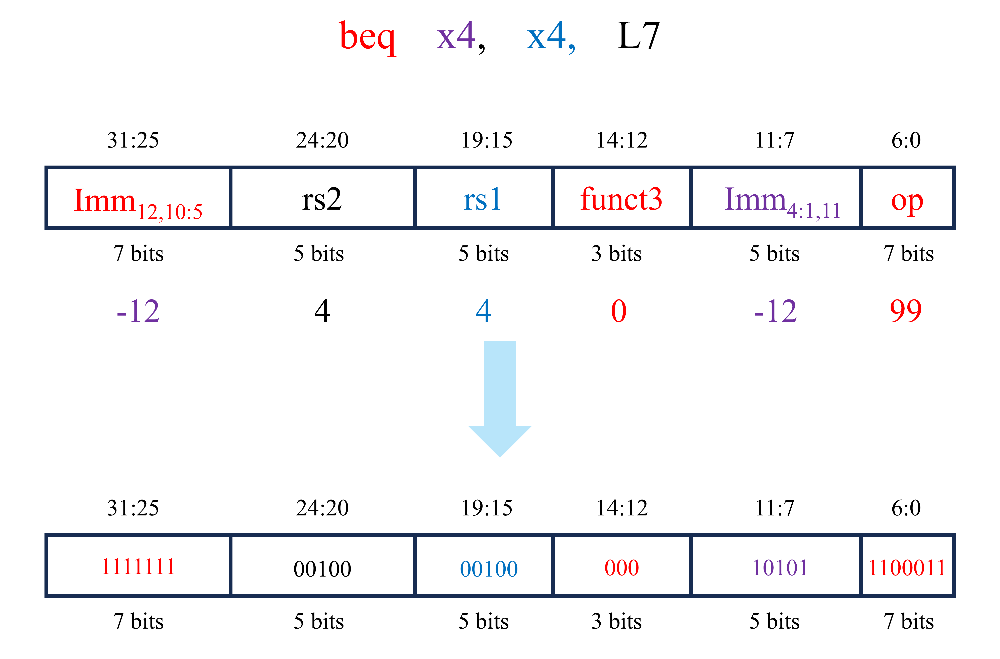
实现上述指令的电路实现如下图所示(灰线为完成本指令用不到的电路)
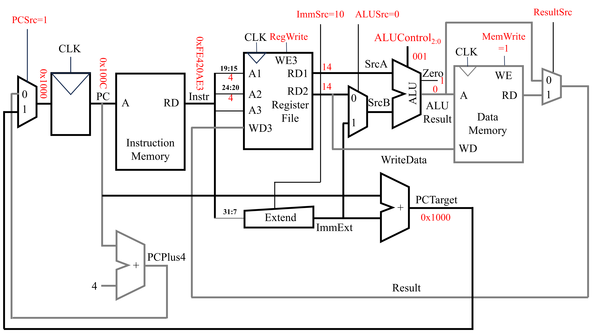
执行该指令时，PC为0x100C，从指令存储器(Instruction Memory)中获得的指令机器代码为0xFE420AE3。随后，从寄存器文件中获取指令中两个寄存器的值。其中，寄存器文件的A1端口对应着指令中rs1对应的寄存器的序号(即指令中的19至15位)，RD1端口输出rs1对应的寄存器中的值。而寄存器文件的A2端口对应着指令中rs2对应的寄存器的序号(即指令中的24至20位)，RD2端口输出rs2对应的寄存器中的值。x4寄存器中的值为14，因此RD1与RD2的输出值都为14。随后，将这两个值都传入ALU中，此时ALUControl为001(对应减法操作)。由于减法的结果为0，因此ALU中的零信号为1。在此基础上，上图最左侧添加了一个复用器。该复用器用来选择PCNext的来源。当PCSrc为0时，PCNext由PCPlus4而来。而当PCSrc为1时，PCNext由PCTarget而来。PCTarget是此时的PC值与指令中立即数的和。
以上就讨论了在本文开头展示的4条汇编语言的底层实现方式。但是上述的实现的方式还不够，因为还未直接将指令与控制信息(PCSrc，RegWrite，ImmSrc，ALUSrc，ALUControl，MemWrite和ResultSrc)之间联系起来。换而言之，就是只考虑了实现的功能，而未考虑控制信号。因此，下面将在上述电路的基础上增加控制单元。
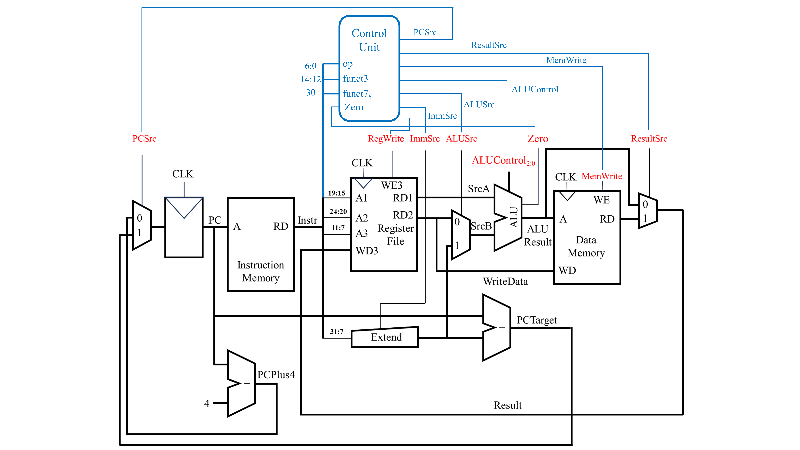
上图中蓝色部分为在原有的电路上增加的控制单元，控制单元有4个输入，分别为opcode，funct3，funct7的第5位和ALU计算结果中的Zero信号。通过指令中的opcode，funct3和funct7的第5位可确定是哪一个指令。而Zero信号则与分支语句有关。输出的有如下的7个信号：
PCSrc：控制PC的下一个值。若为0，常规顺序结构，若为1，分支语句ResultSrc：控制最终结果的来源。若为0，结果直接来源于ALU，若为1，结果为从数据存储器中读出的值MemWrite：控制是否允许对数据存储器进行写入。若为0，不能写入，若为1，能写入ALUControl：控制ALU中执行的运算类型ALUSrc：控制传入ALU的第二个操作数的来源。若为0，来自寄存器文件，若为1，来自立即数ImmSrc：控制立即数的解码方式。若为00，立即数是指令I型指令的解码方式，若为01，立即数是S型指令的解码方式，若为10，立即数是B型指令的解码方式RegWrite：控制寄存器文件是否可以写入。若为0，不可以写入，若为1，可以写入
其他指令的底层实现
在上述电路的基础上，我们可以获得以下的执行and指令的电路实现。
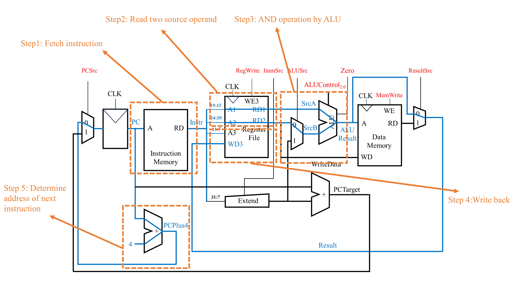
在上述电路的基础上，我们可以获得以下的执行andi指令的电路实现。
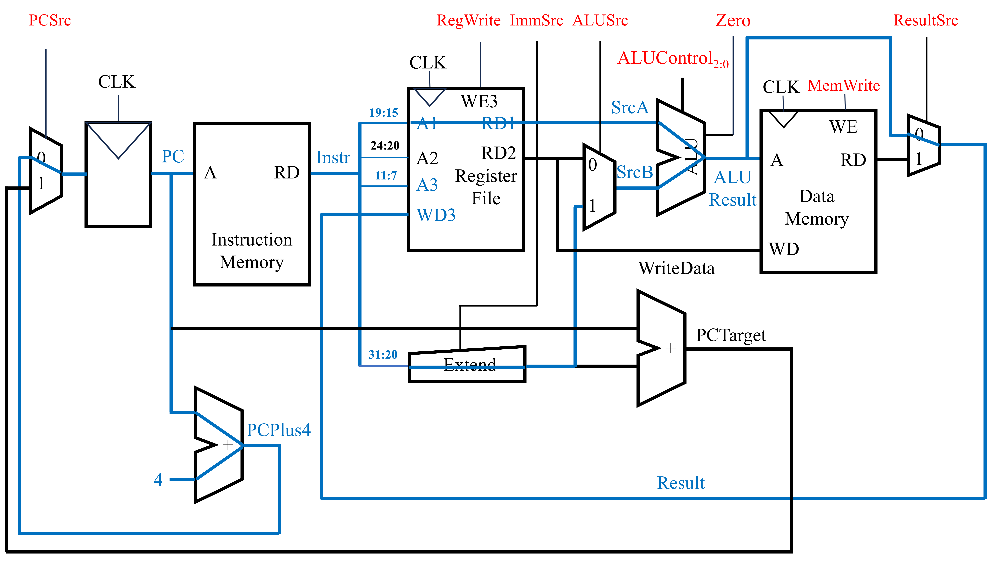
此外，我们还可以得到jal指令的底层电路实现。jal rd, label指令完成了两件事。第一件事是将PCNext变为PC+imm(imm通过label与目前的PC求差得到)。第二件事是将当前PC加上4的值(即后一条指令的地址)保存到寄存器rd中。
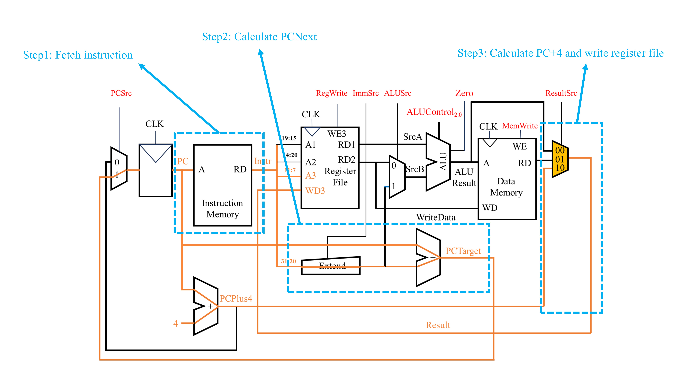
上述的jal指令的底层电路实现与前面讨论的其他指令的电路实现最大的区别在与最终写入寄存器文件中的结果Result既不来自于ALU直接计算的结果ALUResult，也不来自从数据存储器中读出的结果ReadData，而是来自PCPlus4。因此，在这里控制Result来源的复用器信号由之前的1位变为2位。ResultSrc=10对应着Result的结果来自PCPlus4。
底层实现效率分析
对于本篇文章设计的电路结构，lw是最慢的(因为相较于其他指令，lw指令需要读寄存器文件中的值、使用Extend对立即数进行符号拓展、使用ALU进行计算、读数据存储器的值以及写寄存器文件的值。该指令几乎把上述电路中耗时的电子元件都走了)。对于单周期处理器而言，其的时钟周期取决于最慢的那条指令。因此，下面分析lw指令的耗时。
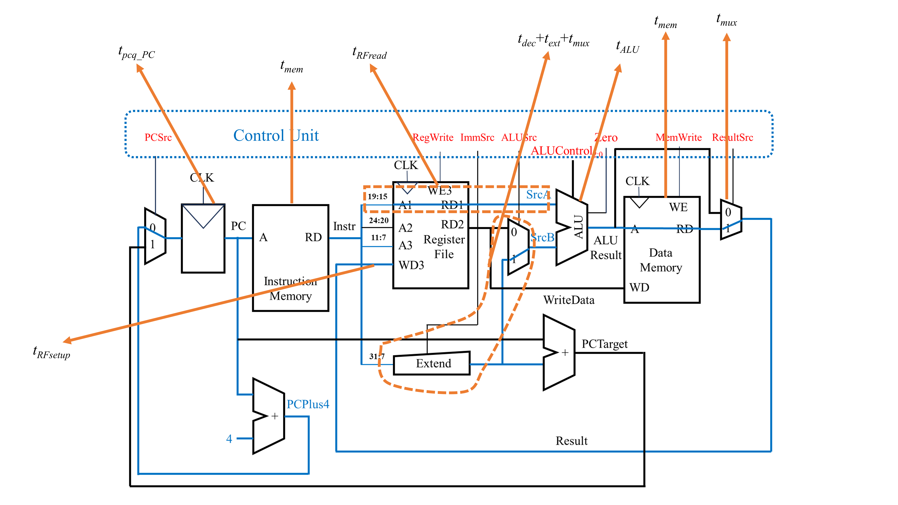
上图中，由于从寄存器中读取值与拓展立即数是同时发生的，因此需要求一个max函数。由于一般来说，从寄存器文件中读数据更慢。因此，上述的公式可以简化为：